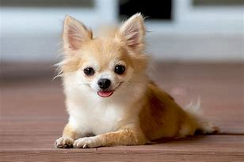

El Chihuahua es una de las razas de perro mas pequeñas del mundo, y su altura promedio lo demuestra claramente. Estos perritos suelen medir entre 15 y 23 centimetros a la cruz(es decir, desde el suelo hasta los hombros). Aunque existen ejemplares un poco mas pequeños o grandes, la mayoria se mantiene dentro de este rango. Su tamaño compacto los hace ideales para espacios reducidos y para ser llevados facilmente en brazos o en bolsos especiales para mascotas. A pesar de su estatura, tienen una gran personalidad que muchas veces parece mucho mas grande que su cuerpo
Suele estar entre 1.5 y 3 kilogramos dependiendo de su estructura corporal y genetica. Algunos ejemplares pueden pesar un poco menos o mas, pero si superan los 3.5kg sin una razon medica, podrian estar en sobrepeso. Mantener un peso saludable es fundamental para esta raza, ya que su pequeño tamaño los hace mas propensos a problemas en las articulaciones, el corazon y la espalda sin cargan kilos de mas. Una alimentacion balanceada y ejercicio moderno son claves para que el Chihuahua se mantenga en forma y con buena salud.
Los Chihuahuas tienen un cuerpo compacto y bien proporcionado, a pesar de su diinuto tamaño. Su estructura es firme, con un pecho relativamente amplio y una espalda recta que le da estabilidad. Este cuerpo solido y musculoso le permite moverse con agilidad y energia, lo que lo hace un perro activo y valiente. Su tamaño pequeño no significa fragilidad: es sorprendentemente resiste y lleno de vitavilidad

Tipos de perro chihuahua
Chihuahua cabeza de manzana
Esl el mas comun, su cabeza tiene como su nombre indica, una forma parecida a la de una manzana que le da un aspecto dulce y cuidadoso. Tiene dos orejas grandes y separadas, casi siempre en posicion recta. En contraste con una cabeza grande y los ojos saltones, su cuerpo es pequeño y fino. Al final de su cuerpo nos encontramos con una pequeña cola que gira sobre el dorso
Chihuahua cabeza de venado
Es algo mas grande que el anteror. La forma de la cabeza es mas alargada y en algunos casos recuerda a la de un ciervo pequeño. Son algo mas altos y estilizados aunque igualmente muestran una apariencia delicada y dulce que nos enamoran, a demas de las caracteristicas fisicas tambien nos encontramos ante dos tipos de pelaje distinto:
Chuhuahuas de pelo largo
Chuhuahuas de pelo corto
El chihuahua es un exelente perro compañia, gustan de atencion y son leales a sus dueños, aunque estan considerado como perros de pierna son muy activos y les gustan estar ocupados, el chihuahua es una buena mascota para la familia cuando se le trata con respeto, pero tambien uns reputacion de querer morder a los extraños o a los nilos pequeños por sentirse amenazados por su tamaño pequeño, como muchos de los perros pequeños, tienden a ladrar mas que los perros mas grandes. Buscan dominar a sus dueños y son un trato temperamental. Esta raza adapta perfectamente a la vida urbana y es que no tendra problemas en vivir en un departamento de tamaño reducido. Aun asi, el chihuahua es muy inquieto y nervioso, deberemos sacarlo a pesar al menos dos veces al dia para que se ejercite asi como jugar con el dentro del hogar